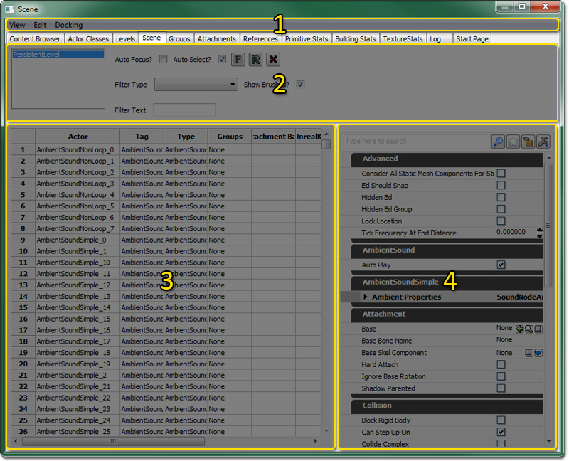
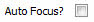
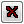
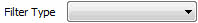
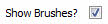
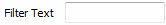

Scene Manager Reference
Overview
The Scene Manager is a table-based interface for viewing and maniplating the actors in a current Level in the World. Actors are displayed as rows in the table, which each column being a property of interest. This interface is well-suited for searching for actors by name, by type, or by property value, as well as for bulk-modifying actor property values.
Opening the Scene Manager
The Scene Manager can be accessed through the View menu of the level editor. Selecting the Browser Windows > Scene Manager option will open the Scene Manager directly. Another option is to click the Open the Content Browser button in the main level editor toolbar and then select the Scene tab in the browser window that opens.
Scene Manager Interface
The Scene Manager is divided into four regions:

- Menu Bar
- Tool Bar
- Actors List
- Properties Pane
Menu Bar
View
- Refresh - refresh the Actors List.
Edit
- Delete - delete the selected Actors from the current Level.
Docking
- Docked - This option will dock a currently floating browser into the main browser window. When the current browser is docked, this option appears checked.
- Floating - This option will undock a docked browser from the main browser window causing it to become a floating browser in its own window. When the current browser is floating, this option will be checked.
- Clone Browser - This option will create a duplicate of the current browser.
- Remove Browser - This option will remove or delete the current browser. This option is only enabled on cloned browser windows.
Tool Bar
Along the top of the scene manager are the controls for modifying the contents of the actor table and for focusing on selected actors. To the left, there is a combo box which lists all the persistent and streaming levels.
|  | If checked, selecting an actor in the table view will cause the main editor viewports to center on the selected actor. |
| | When "Auto Focus?" is disabled, this manually focuses the editor viewports on the actor selected in the actor table. |
| | this manually refreshes all scene manager panes. |
|  | Deletes all selected actors. |
|  | Selecting an actor class in this combo will cause only actors of that class to be displayed in the actor table. |
|  | This controls whether or not brush actors are displayed in the scene manager. |
|  | Text entered in this field will cause the actor list to only show actors whose names contain the specified text. |
Actors List
The Actors List displays the Actors that are contained within the currently-selected level.
By default, when a new map is opened the SceneManager will be populated with all the actors from all levels currently loaded, persistent and streaming. This can be verified by observing that all the levels in the toolbar’s level list are selected. Changing which levels are selected in the list will repopulate the actor list with that level’s actors. Another method of populating the actor list is to select a level or levels from the Level List in the Levels Browser, right-click the selected level(s), and choose Find in Scene Manager... from the context menu.
The Actors List is a table contains a list of actors belonging to a particular level or levels. Each Actor occupies a row, with each column being a particular actor property. Actors can be selected by clicking on any column in the Actor's row. When an Actor is selected, the Property Window on the right side of the Scene Manager is updated to contain that actor's properties.
The order in which Actors appear in the table can be organized by value; clicking on a property column causes the table view to sort by that column's property.
Currently, the properties viewed along the table columns are fixed. We're planning to change this so that any property can be viewable in the table view.
More Actors or properties can be viewed by using the scrollbars or resizing the Scene Manager window.
Properties Pane
The Properties Pane displays the properties for the currently-selected Actor in the Actors List.
The right side of the Scene Manager is occupied by a property window for any Actor(s) selected in the actor table. As with any other property window in UnrealEd, actor properties can be viewed and modified through the controls in this window.
Important!
You are viewing documentation for the Unreal Development Kit (UDK).
If you are looking for the Unreal Engine 4 documentation, please visit the Unreal Engine 4 Documentation site.